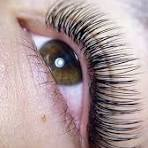
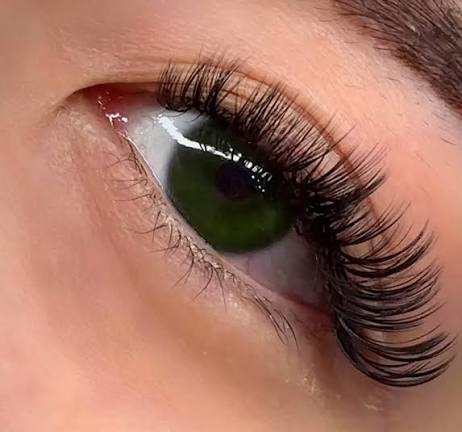
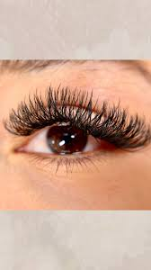
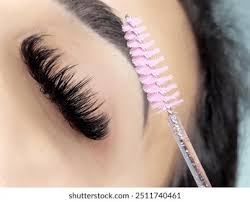
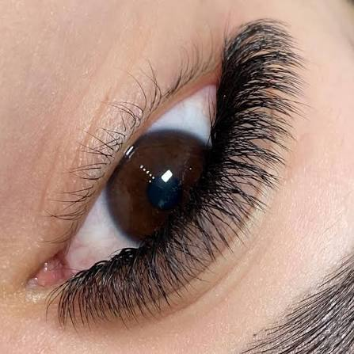
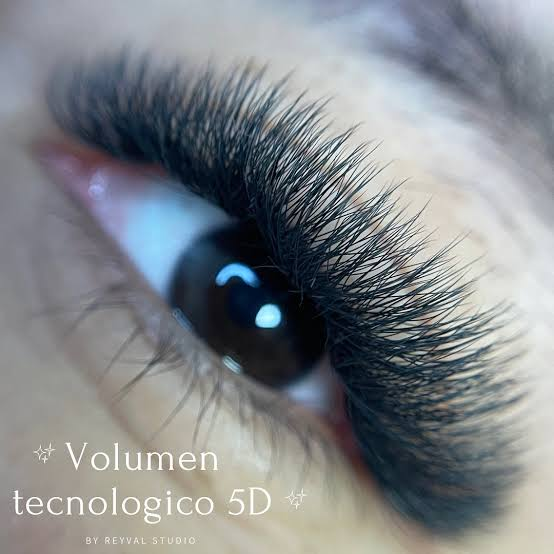
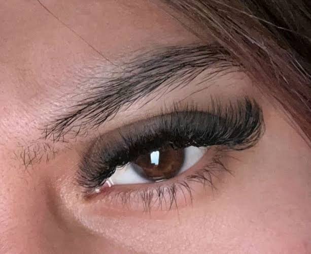

 CLASICASLas pestañas clásicas (también conocidas como técnica 1x1 o pelo a pelo) son un estilo de extensiones en el que se adhiere una sola extensión de fibra sobre cada pestaña natural. $300 |
 HIBRIDASLas pestañas híbridas son una técnica de belleza que combina las extensiones clásicas (pelo a pelo) con las de volumen ruso (abanicos de varias extensiones en una sola pestaña natural). $400 |
 HAWAIANASLas pestañas hawaianas son extensiones diseñadas para lograr una mirada fresca, ligera y con movimiento, inspiradas en un estilo natural y veraniego. $400 |
 VOLUMEN RUSO 3DLas pestañas de volumen ruso 3D consisten en aplicar un abanico de 3 extensiones ultrafinas (de grosor 0.05 mm o 0.07 mm) sobre cada pestaña natural. $450 |
 VOLUMEN EGIPCIO 4DLas pestañas egipcias 4D (también conocidas como volumen tecnológico egipcio 4D o en forma de W) son una técnica de extensiones que utiliza fibras sintéticas ultraligeras prefabricadas con forma ramificada. $450 |
 VOLUMEN TECH 5DLas pestañas Volumen Tech 5D (también conocidas como fibras tecnológicas 5D o en forma de W/U) son extensiones prefabricadas que agrupan 5 filamentos unidos en una sola base. $500 |
 VOLUMEN TECH 6DLas pestañas tecnológicas 6D (o 6D W) son extensiones con abanicos pre-armados de seis puntas en forma de "W" que permiten multiplicar hasta seis veces la densidad de la pestaña natural con la misma facilidad de aplicación que una técnica clásica. $550 |